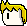

hidden:
this height is 20px
this height is 40px
this width is 200px
这个段落的行高为60px
使用的是line-height
hahaha
你也可以使用min-height,min-width,max-height,max-width来指定最大（小）高度和宽度
有两种方式让元素不显示
display
你可以通过display属性来改变元素的显示方式，可以有inline，代表将元素变为内联元素，这样就不会自动换行了
比如说这个段落
你也可以display:block来将元素变成块级元素，这样就会自动换行
使用position来改变元素位置
可以有如下选择
static为默认值，表示没有定位，按照HTML默认的方式去排放。静态定位的元素不会受到 top, bottom, left, right影响。
fixed为固定定位，即使窗口移动，元素也不会移动。你比如右上角的图片。
relative是在默认的位置上进行偏移。但是需要注意的是，即使内容偏移了，原本占的位置还是在原处
this use relative,offset 50
你必如上面那个文本，虽然向上偏移了，但是却还在原处保留着占据的空间
abosolute绝对定位，表示相对于最近的父元素进行定位。如果没有父元素，默认为HTML文档（body标签）
比如下面这个元素。当你向下划动到它将要出去的时候，你就能知道什么叫做sticky了
这是个sticky定位
重叠元素使用z-index属性来指定。也就是说给元素指定一个z坐标。坐标是无符号整数。
this is a picture
裁剪元素的外形使用clip:rect(x1,y1,x2,y2),这一半对图像使用
最后是overflow，这个属性指出如果内容超出框架的话，如何处理
this is a pre tag line1 line2 line3 line4 line5 line6 line7 line8 line9